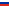
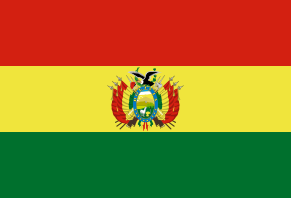
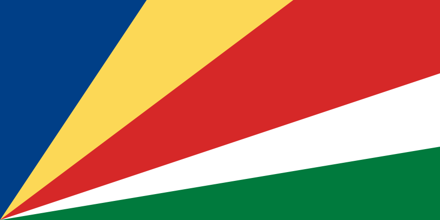
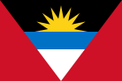
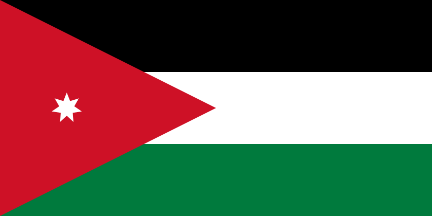
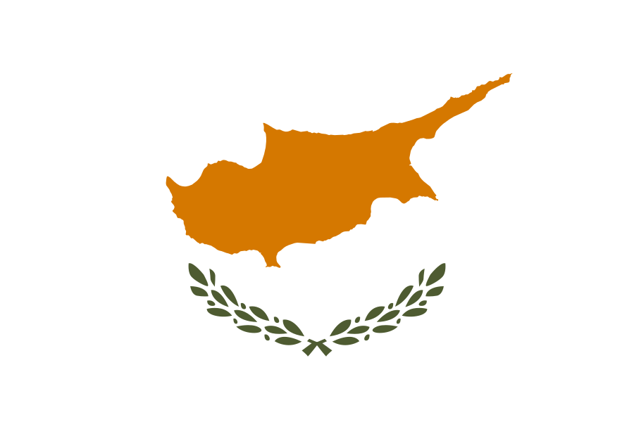
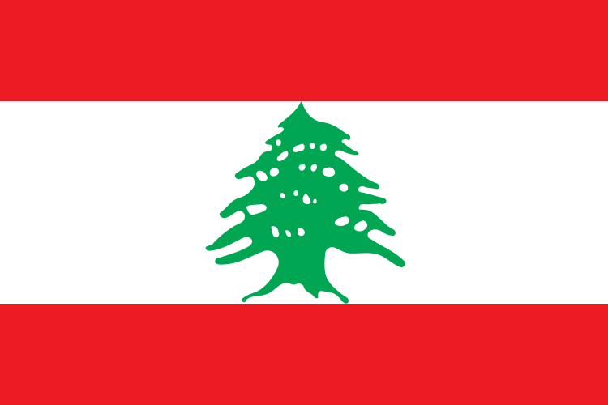
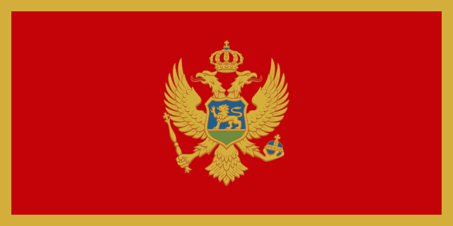
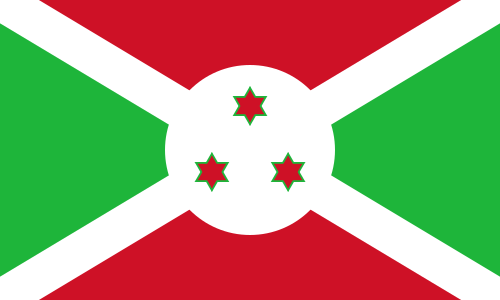

Question 91Completed result

Country (revealed after completion)
Russia
Currency🟩 Independent
Your answer: RubelCurrent currency: Russian Ruble (RUB)
Attempts: Rubel
'Rubel' accepted as obvious phonetic spelling of Ruble, Independent +1.
Edition 1 · Q91–Q100 · all 10 graded
| Score | Currencies |
|---|---|
| Pure | 8/10 |
| Pure + Assisted | 8/10 |
| Independent | 8 |
| Assisted | 0 |
| Wrong | 2 |
| Cancelled | 0 |
| Score | Currencies |
|---|---|
| Pure | 69/99 |
| Pure + Assisted | 72.5/99 |
| Independent | 69 |
| Assisted | 7 |
| Wrong | 23 |
| Cancelled | 1 |
Original flags, exact submitted attempts, current national currencies and country names revealed after final resolution. Q57 remains earlier cancelled for unfair flag and excluded from cumulative denominator.

Attempts: Rubel
'Rubel' accepted as obvious phonetic spelling of Ruble, Independent +1.

Attempts: Peso → Dollar → don't know
Unassisted original answer and Dollar retry incorrect; user explicitly gave up, Wrong 0.
Attempts: Franc
First unassisted answer correct +1.

Attempts: Franc → Dollar → don't know
Unassisted original answer and Dollar retry incorrect; user explicitly gave up, Wrong 0.

Attempts: Dollar
First unassisted answer correct +1.

Attempts: Dinar
First unassisted answer correct +1.

Attempts: Euro
First unassisted answer correct +1.

Attempts: Lira
'Lira' accepted as local current Lebanese pound/lira name, Independent +1.

Attempts: Euro
First unassisted answer correct +1.

Attempts: Pound → Franc
Pound then independently corrected to Franc, full Independent +1.
| Q | Flag | Correct Country | First Answer | Final Answer | Correct Currency + ISO | Result |
|---|---|---|---|---|---|---|
| 91 | Russia | Rubel | Rubel | Russian Ruble (RUB) | 🟩 Independent | |
| 92 | Bolivia | Peso | don't know | Bolivian Boliviano (BOB) | 🟥 Wrong | |
| 93 | Republic of the Congo | Franc | Franc | Central African CFA Franc (XAF) | 🟩 Independent | |
| 94 | Seychelles | Franc | don't know | Seychellois Rupee (SCR) | 🟥 Wrong | |
| 95 | Antigua and Barbuda | Dollar | Dollar | East Caribbean Dollar (XCD) | 🟩 Independent | |
| 96 | Jordan | Dinar | Dinar | Jordanian Dinar (JOD) | 🟩 Independent | |
| 97 | Cyprus | Euro | Euro | Euro (EUR) | 🟩 Independent | |
| 98 | Lebanon | Lira | Lira | Lebanese Pound (LBP) | 🟩 Independent | |
| 99 | Montenegro | Euro | Euro | Euro (EUR) | 🟩 Independent | |
| 100 | Burundi | Pound | Franc | Burundian Franc (BIF) | 🟩 Independent |
100 / 195 countries encountered · 99 graded currency answers · 1 earlier cancelled · 95 remaining